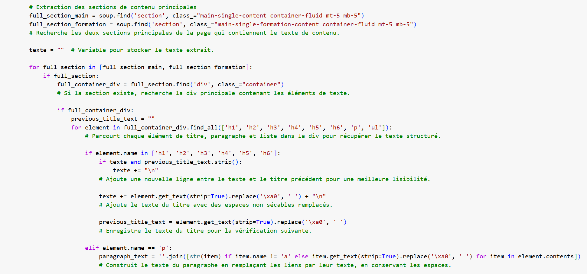
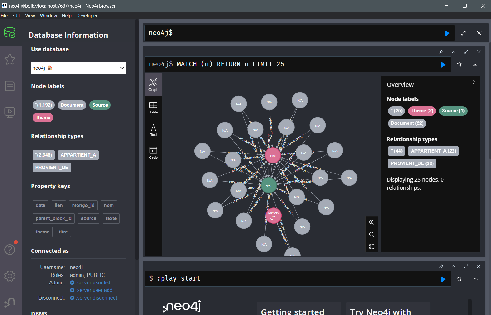
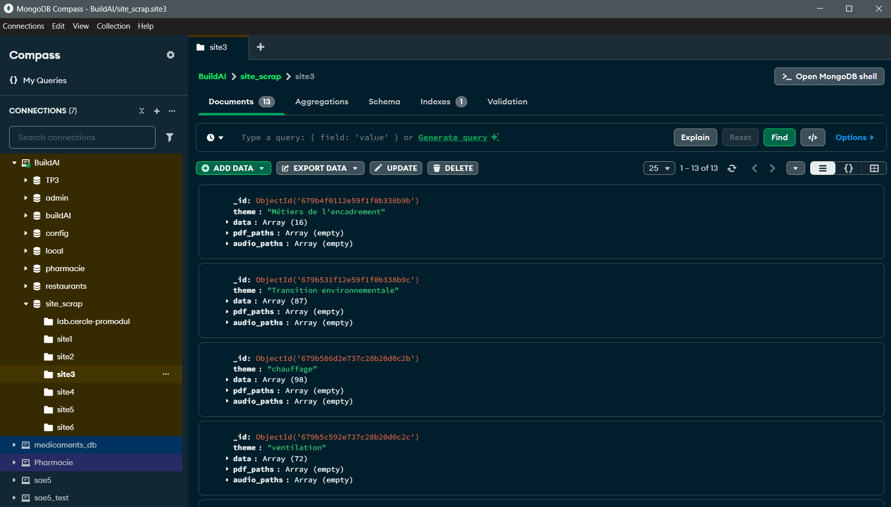
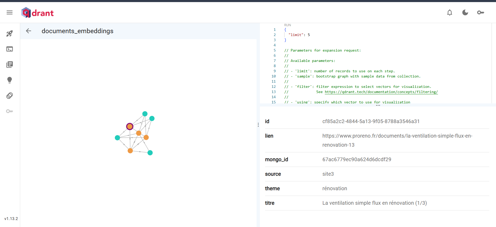

Compétence 4 : Gérer des données de l’information
Cette compétence consiste à collecter, organiser, analyser et exploiter des ensembles de données volumineux et complexes, tout en garantissant leur qualité et leur accessibilité.
AC1 - Capturer et stocker des ensembles volumineux et complexes de données hétérogènes
Dans le cadre de la SAE, j’ai réalisé du scraping de sites internet spécialisés dans le bâtiment afin de constituer une base de données riche et variée. Les données provenaient de plusieurs sources en ligne. Ces données ont ensuite été intégrées dans trois bases différentes selon leur nature :
Mes preuves :
- 
- 
- 
- 
AC2 - Préparer et extraire les données pour l'exploitation
Pendant mon alternance chez CA-GIP, j’ai travaillé sur un projet visant à filtrer et préparer des données sur les dotations des collaborateurs de l'entreprise (mobiles et postes de travail). J’ai utilisé SQL et Dataiku pour sélectionner, nettoyer et structurer les données. Ces données ont ensuite été utilisées à la fois pour des Dashboard PowerBI mais aussi pour alimenter une application sur les dotations. Cette expérience m’a permis de mieux comprendre l’importance de la qualité des données et les impacts d’une mauvaise préparation. J’ai aussi amélioré ma rigueur et ma méthode de travail.
Mes preuves :

AC3 - Appliquer des méthodes d'exploration et d'exploitation des données
Dans le cadre du projet BuildAI, j’ai appliqué des méthodes d’exploration de données en utilisant une base vectorielle pour analyser les formations du secteur du bâtiment. Chaque question posée par un utilisateur à notre LLM est transformée en vecteur et comparée aux vecteurs stockés, permettant d’identifier rapidement les formations les plus pertinentes. Ce processus permet d'extraire les informations utiles et guider la génération de réponses par le modèle de langage.
Mes preuves :

AC4 - Mettre en production et optimiser le système de gestion
Dans le cadre de mon alternance, pour chaque projet, j’ai assuré la mise en production en créant des scénarios automatisés permettant aux projets de s’actualiser selon la fréquence souhaitée (quotidienne, hebdomadaire ou mensuelle). Afin de garantir une maintenance efficace et un partage clair des connaissances, j’ai systématiquement rédigé un wiki pour chaque projet, servant de documentation détaillée pour que tout utilisateur puisse comprendre le fonctionnement et les spécificités du projet. Par ailleurs, j’ai travaillé à l’optimisation des requêtes SQL pour réduire le temps d’exécution et améliorer la performance globale des systèmes de gestion.